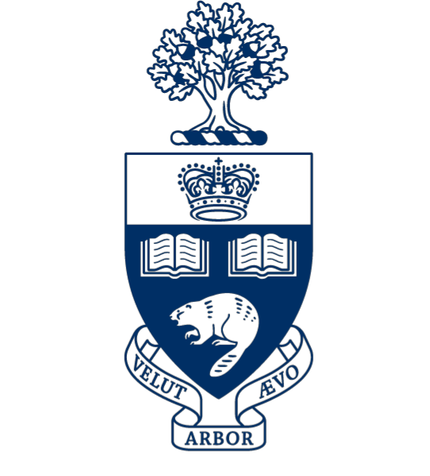
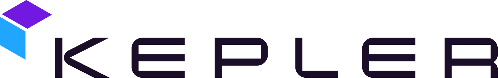
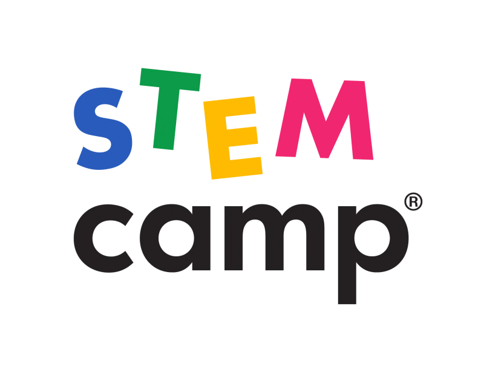
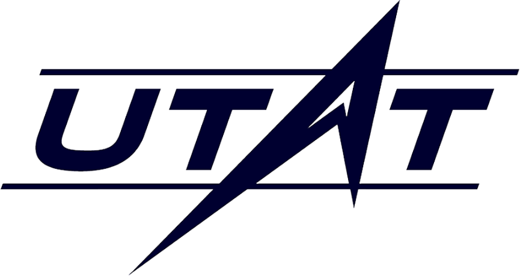

Professional Journey
Career
Aerospace engineer with experience across satellite systems, aircraft hardware, and engineering leadership — building real-world technology at the frontier of space and aviation.
4
Organizations
5
Years Exp.
Inf
Volunteer hrs
Education
Academic Background

🎓'" />University of Toronto
BASc Engineering Science — Aerospace
Sept. 2020 – Present · Toronto, Ontario, Canada
Aerospace Engineering
Aircraft Engineering
Spacecraft Engineering
Robotic Engineering
🏅'" />
Troost Institute for Leadership Education
Engineering Leadership Summer Fellowship
May 2023 – Sept. 2023 · Toronto, Ontario, Canada
Leadership
Professional Experience
Work History
Aug. 2024 — Present

🛰️'" />
Systems
Aug. 2024 – Present
- Designed and implemented a cloud-based Systems Design Toolbox in Python to streamline Systems Engineering services and integrate software into the company's design workflow.
- Developed a Model-Based Systems Engineering (MBSE) framework enabling efficient satellite analysis across requirements management, budget allocation, and integration processes.
- Led the development of a global engineering design process for technology innovation by collaborating with cross-functional teams.
- Contributed to mission simulation software by developing a delta-V budget analysis script for nine satellites, enabling precise formation flying for optical link connections in space.
- Supported verification management by analysing test data and collaborating with cross-functional teams to ensure all requirements were met prior to launch.
Python
MBSE
Systems Engineering
Requirements Management
Mission Simulation
Process & Automation
May 2024 — Aug. 2024
✈️'" />
Mechanical
May 2024 – Aug. 2024
- Conducted design modifications on multiple parts for multiple aircraft engines, enhancing manufacturing efficiency, ensuring material compliance, and improving engine performance.
- Facilitated supplier transitions by establishing substantiation requirements and reviewing testing data including dimensional tolerances, key characteristics, and fit assembly evaluations.
- Led 12-person Integrated Product Team (IPT) to investigate field challenges and develop new design solutions.
- Performed stack-up analysis, mark-up analysis, and GD&T calculations for nine engine models.
- Led the organisation of 5 events for 25 interns as Intern Committee Lead, facilitating professional connections between interns and managers.
Turbomachinery
GD&T
CAD
Aircraft Engines
Propulsion
Manufacturing
May 2023 — May 2024
⚙️'" />
Electrical
May 2023 – May 2024
- Conducted hardware design including antenna design, PCB design, and hardware testing for various products and communication protocols at the world's leading security controls R&D facility.
- Developed testing procedures for regulatory certification across global regions, facilitating product sales compliance and ensuring products meet company quality standards.
- Led the creation of advanced data analysis software using MATLAB for SNR analysis, sensitivity analysis, and hardware simulation to optimise the development process.
- Developed and implemented robotic procedures using Visual Basic for automation testing, encompassing motion testing, sensitivity testing, and shock testing.
PCB Design
Antenna Design
Hardware Testing
Regulatory Compliance
May 2022 — Aug. 2022
🚀
Software
May 2022 – Aug. 2022
- Created a pure Python library for spacecraft Attitude Control System (ACS) design.
- Developed a high-accuracy space environment model for high-precision navigation analysis.
- Used the ACS library to validate and design satellite attitude control systems.
- Analysed and validated Attitude Control System models using Ansys Systems Tool Kit (STK).
- Collaborated with co-workers using GitHub for version control.
Python
ACS / GNC
STK
Space Environment Modelling
GitHub
June 2021 — Aug. 2021

🌐'" />
Health and Safety
June 2022 – Aug. 2022
- Managed the health and safety of staff and campers on site.
- Delivered engaging and educational STEM Camp experiences through scientific activities.
- Led students aged 5–13 in learning the basic principles of coding using Scratch.
- Collaborated with other counsellors to ensure sessions were creative and interactive.
Teaching
Health & Safety
STEM Education
Youth Mentorship
Volunteer & Leadership
Community Involvement
Oct. 2020 — Present

🛰️'" />
Director
Oct. 2020 – Present
- Strategically steered organisational initiatives, resulting in 210,000 CAD in project funding, a 30% team expansion, and five new partnerships.
- Ensured team compliance with all regulatory standards and obtained appropriate licences from the Canadian Space Agency, Global Affairs Canada, FCC, and ISED.
- Implemented Model-Based Systems Engineering (MBSE) framework into the organisational workflow to facilitate integration and ensure all subsystems function cohesively.
MBSE
Regulatory Compliance
Fundraising
Team Leadership
Partnership Development
🛰️'" />
Leadership
Oct. 2020 – Sept. 2023
- Led a team of 15 engineering students to develop the ADCS for the FINCH satellite mission (Field Imaging Nanosatellite for Crop residue Hyperspectral mapping).
- Designed satellite control systems including sensors, actuators, and software components, integrating them into the overall systems architecture.
- Developed MATLAB and Python scripts for Guidance, Navigation, and Control (GNC) applications on orbit.
- Performed mission simulations using Ansys STK and conducted risk analysis and trade-off studies.
ADCS
MATLAB
Python
GNC
STK
Risk Analysis